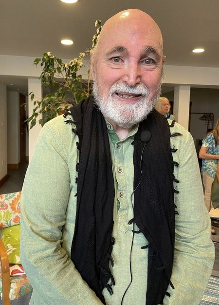

The Six Pillars

1. Love
Love is not one of the qualities we hope to develop on the spiritual path. Love is the path itself.
It begins with the most intimate relationship we will ever have — the one with ourselves. We are often taught to love everyone else while quietly carrying shame and judgment toward ourselves. But how can we recognize the Divine in another while denying the sacred presence within?
Self-love is not narcissism. It is learning to meet ourselves with compassion, forgiving ourselves for what we did not know, and ending the habit of being our own enemy.
As that compassion grows, the distance between me and you becomes less solid. Love stops being an emotion and becomes a spiritual realization.
Read the Full Teaching →2. Forgiveness
Forgiveness is not primarily a gift we give another person. It is a gift we give ourselves. It is the decision to stop letting something that happened in the past occupy the sacred space of the present.
When we hold onto resentment, we may believe we are holding someone accountable. Usually we are the ones carrying the weight. The person who hurt us has moved on while we keep replaying the conversation.
Forgiveness does not mean forgetting, and it does not require reconciliation. There are people we can forgive whom we should not invite back. We can remember without reliving. We can keep the wisdom and put down the wound.
“My freedom cannot depend on another person's behavior.”
Read the Full Teaching →3. Gratitude
Gratitude is more than saying thank you when something pleasant happens. It is a way of seeing.
Life keeps placing experiences in our hands, and not all of them look like gifts when they arrive. The spiritual question is not always “Why did this happen to me?” A deeper question may be: “What is this experience asking me to discover?”
Gratitude is not denial. It does not ask us to smile when our hearts are breaking. There are losses that deserve mourning. Gratitude is consciousness — the willingness to look more deeply at whatever life has placed before us.
“Gratitude does not change the past. It changes the consciousness with which we enter the future.”
Read the Full Teaching →4. Healing
Healing is not simply the absence of disease. It asks us to look at the whole human being — body and mind, heart and emotions, relationships and spirit.
Modern medicine has given us extraordinary gifts, and we should be grateful for them. But healing becomes incomplete when we believe the body is the only part of us that needs attention. There are wounds that never appear on an X-ray: shame, fear, loneliness, unforgiven pain, the belief that we are unworthy of love.
No one causes their own illness by failing spiritually, and no one should ever be blamed for becoming sick. But whatever we are moving through, the whole person deserves care.
“Healing does not always mean cure. Wholeness is deeper than physical perfection.”
Read the Full Teaching →5. Oneness
Beneath all appearances — names, bodies, personalities, religions, cultures — there is only One. One Source. One Life. One Divine Presence.
Imagine a wave rising from the ocean. It has a shape, a beginning, a moment when it stands high above the water. Then it returns. Is the wave separate from the ocean? Its form is temporary, but its substance is the ocean. The wave does not need to become the ocean — it already is the ocean, appearing as a wave.
Oneness does not mean sameness. Our differences remain. But beneath them is one Life, one Source, one mystery expressing itself through countless forms.
Read the Full Teaching →6. Service
If there is only One, then there is no separate other to serve. There is only the Divine appearing in countless forms — the person before us, the animal beside us, the stranger, the Earth itself.
Service is not about becoming a savior. The ego can hide inside spirituality too, saying: I am the giver, you are the one who needs me. That is simply another form of separation.
Genuine service carries humility. It does not need applause or keep a record of good deeds. And service must include ourselves — sometimes it means resting, sometimes saying no.
“The ego says, I am serving. The awakened heart says, Love is serving through me.”
Read the Full Teaching →These are doorways, not the whole teaching. The full exploration lives in the books, the talks, and the retreats.